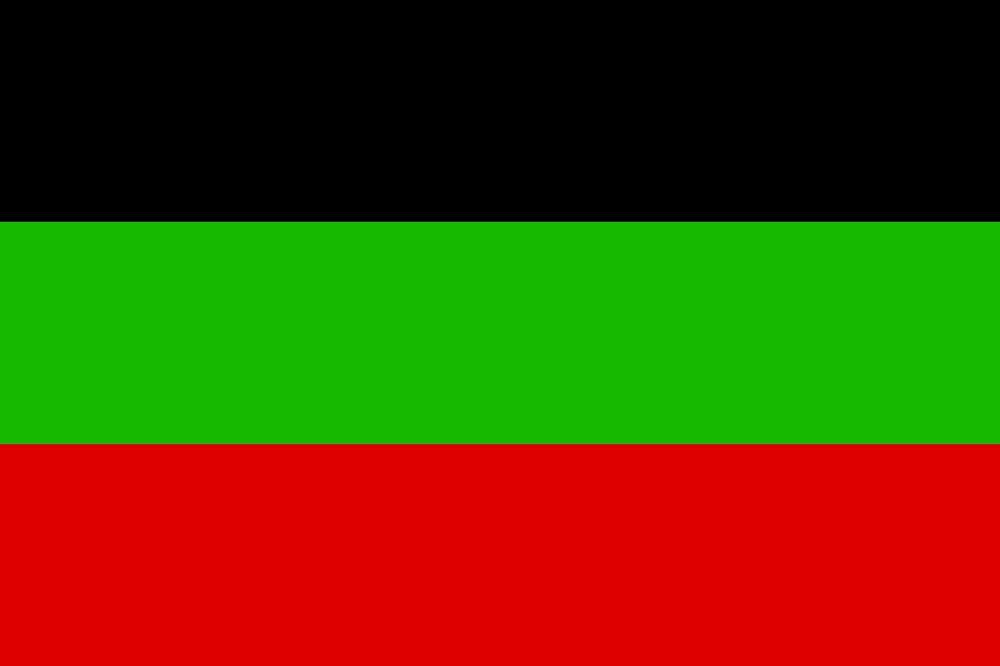

Славия
Славия(происхождение от рус. "слава") - государство, расположенное на западе, которое граничит с Китаем, КНДР и Россией. Международный статус: частично-признанное государство
(Южной Осетией и Абхазией). Омывается двумя морями(Охотским и Японским).
Военные конфликты
Валюта
Страна изолирована, экземпляры валюты отсутствуют.
Туризм
Славия изолирована.Страна закрыта для туристов.
История
В 1917 году было основано Княжество Славия, благодаря Владимиру Соколову, талантливому командиру.
В конце 1917 Российская империя дала независимость Княжеству Славии, т.к восстания не подавлялись.
В 1920 году в Славии начался социализм.
12.03.1926 война закончилась, страна стала одной из самых бедных в Азии, начался массовый голод.
К 1930-м годам Славия восстановилась, не без помощи соседей.
В 1938 году, Славия начала сближение с Третьим рейхом.
В 1941 году, Славия вступила в Великую Отечественную войну, на сторону стран Оси.
В 1945 Славия капитулировала, и стала марионеточным государством СССР, была установлена Советская Социалистическая республика Славия (ССРС).
До 1980-х годов Славия была в составе СССР, к 1983-му году ССРС была расформирована, т.к Славия вышла из состава СССР, образовали Временное правительство, и республику Славию.
В 1987 вернули монархический строй.
В 2000-х Славская династия Соколовых закончила своё правление, их место заняла династия Авдеевых.
Следующие 20 лет Славия жила спокойно.
В 2020 был коронован новый князь, Алексей Владимирович Авдеев.
В 2023 году в Славии начались политические беспорядки.

Флаг Славийского государства 1917-2023 гг.
by Iogga for Slavia at 2023